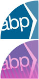
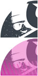
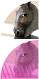
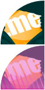
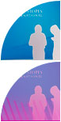
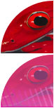
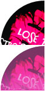

The examples below represent a broad cross-section of my recent work.
Please click on the thumbnails next to each synopsis to view images
of the project.
Timandra, Website
{kind=link}
It’s ironic but design agencies often end up neglecting their own brand and online presence with client work taking precedent. It’s fair to say that when I started looking at the brand for my former employer, it was well due. We decided to tackle the website as part of a rebranding project which saw the agency adopt a series of simple illustrative ‘t’ icons that gave an idea of the breadth of the studio’s work. The concepts that I produced for the website were designed to be functional and neutral allowing the work examples displayed to take centre stage.
Click here to visit the Timandra website.
Marie Stopes International, Cries & Whispers

{kind=link}
{kind=link}
I was delighted when selected by Marie Stopes International to design their flagship publication, Cries & Whispers, thanks to a history of successful projects for the international healthcare organization. A great amount of work had gone in to the compilation of content which was primarily made up of statements from the World’s leading figures regarding abortion and very personal testimonies of womens’ first hand experiences. My concepts had to illustrate this particular plight of women in the developing world without diluting the impact of their statements and testimonies. The eventual design made use of carefully selected and adjusted imagery and clear space to achieve the greatest impact.
Association of Business Practitioners, Website
{kind=link}
The concept and design of ABP’s first website formed the final stage of a branding project for the awarding body. The brief was to keep the design fresh, simple, corporate and on-brand, concentrating on clear navigation and ease of use. It was also crucial for the website’s coding to be perfectly clean and clear to aid accessibility and allow ABP’s own IT department to control updates to content. I used a mixture of hand-coded XHTML, CSS and PHP to help streamline developments to the site and allow for dynamic navigation.
Click here to visit the ABP website.
Noddy, Illustration
{kind=link}
{kind=link}
{kind=link}
{kind=link}
Inspired by the iconic poster art for Scarface, I wanted to see if I could bring Pachino's menace to an unexpected character. I remember watching Noddy as a child, long before I was old enough to watch Oliver Stone's 1983 classic and really enjoyed making him look threatening.
Oceanwave, A5 Flyer
{kind=link}
{kind=link}
Oceanwave are now one of the UK’s leading providers of Wireless internet for Marinas. I had the pleasure of working with the company from the start and the design of this eye-catching flyer was one of the first projects we completed for them, raising awareness and generating interest to help the start-up gain momentum.
Meteor Asset Management, Innovative Solutions Advert
{kind=link}
{kind=link}
In the fast-paced world of finance, time is money. When Meteor Asset Management approached me regarding their requirement for a full page advert, we knew a fast turnaround would be crucial. I managed to complete the project over the course of one day from initial brief to this initial concept and eventual high resolution artwork for print.
La Plagne, Hoody
{kind=link}
{kind=link}
This enjoyable personal project combined three of my passions: Design, snowboarding and clothing. The challenge was to create an eye-catching combination of typography and illustration to encapsulate a winter spent in the snow for the seasonnaires of La Plagne, 2008. Bold lines were used in the type to make the most of the single colour screen printing.
Jilly Vainer, Website
{kind=link}
This freelance project had to be produced quickly and on a very low budget. The chosen concept made use of gentle tones and textures sympathetic to both the Yoga and sculpture aspects of Jilly's work. The layout from page to page varies to retain user interest whilst remaining true to an overall aesthetic. Significant work went in to adjusting the supplied digital snaps to allow the quality of Jilly's work to shine through. The HTML and CSS coding used throughout the site is designed to be extremely streamlined and highly visible to search engines.
Click here to visit Jilly Vainer's website.
Speednames, .me Banners
{kind=link}
{kind=link}
I produced this illustrative animated banner to stand out on the company’s home page, attracting attention to the new .me domain names available. It was important to achieve a certain amount of impact whilst remaining sympathetic to Speednames’ brand guidelines. The final banner was developed, produced and supplied within a few hours from the initial brief.
Marie Stopes International, GSAC Stand
{kind=link}
{kind=link}
This stand for the Global Safe Abortion Conference was one of many projects that I completed for the international healthcare organisation. During the initial brief, we knew little more than how much floor space we had. Eventually we settled on a welcoming horseshoe layout made up of five pop-up stands that the not-for-profit organisation could reuse for future events. I chose some bright colours from MSI’s corporate palette and paid careful attention to how the panels would work together or in isolation.
Print Management Systems, Brochure
{kind=link}
{kind=link}
{kind=link}
When the sister company of my former employer approached me to design a promotional brochure it was clear that the solution should demonstrate what can be achieved in print. The final design relied on sophisticated print finishing and striking red on black adjusted imagery to create a tactile and elegant end result.
Storetech, Identity and Folder
{kind=link}
{kind=link}
When I first spoke to Storetech regarding their marketing material it was clear that they were ready for a rebrand. The logo and corporate suite that I produced made reference to their original brand but armed the company with an entirely fresh image with which to drive sales.
Bedlam Bar, Flyer
{kind=link}
This A6 flyer was designed for high impact on a low budget to deliver the cocktail bar a great result. The design was completed and produced in a short amount of time using fluorescent inks in the straight jacket illustration against a rich black background to seize the attention of the Hampstead village nightlife.
Conjungo, Identity and History
{kind=link}
{kind=link}
Conjungo first approached me close to their inception and provided a very open brief to create a new identity for the technology specific search portal. After providing a wide and varied number of original logo concepts, I developed the final logo and identity with their feedback and have since completed a great number of projects to assist in the development of their powerful website and marketing offering.
Thanks for taking the time to look over some of my work.
Please feel free to download my CV
or contact me for more information
about my skills and experience.